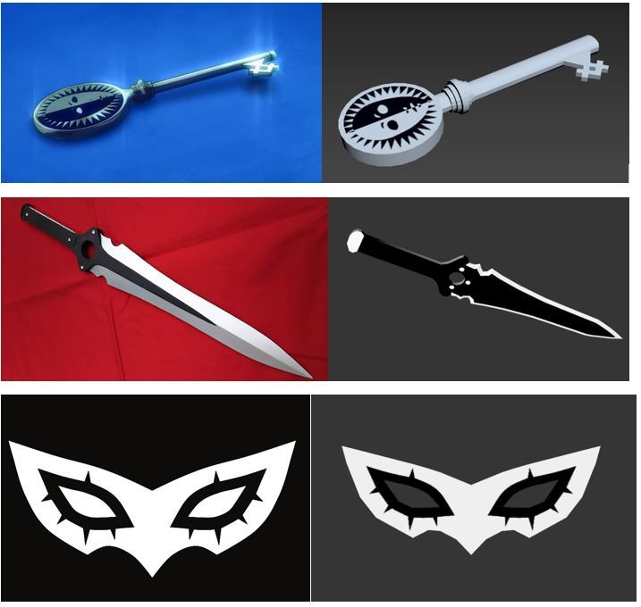

Persona-themed 3D Modelling
In addition to programming, I also have experience in other avenues of game design. One of these avenues is 3D modelling, as I have previously used Autodesk 3DS Max to design my own 3D models. For one of my assignments, I decided to recreate several items from the Persona game series as 3D models, being a knife, a mask and a key. Using screenshots from the games as a reference, I tried to remake the models as close to the original as possible, and was very pleased with the results. After creating the models in Autodesk 3DS Max, I exported them as FBX files, which allowed me to then go on to use them in game engines, such as Unity or Unreal Engine.
Here are the aforementioned items from the Persona series (left) and my corresponding 3D model recreations of them (right). Note that the knife had few high quality images available for me to use, while I used the original low-quality model from the game, so the black area on the knife on the left is actually much larger on the original model than shown in that image.
These models were created using Autodesk 3DS Max and tested in Unreal Engine 4. Textures were edited using Adobe Photoshop.